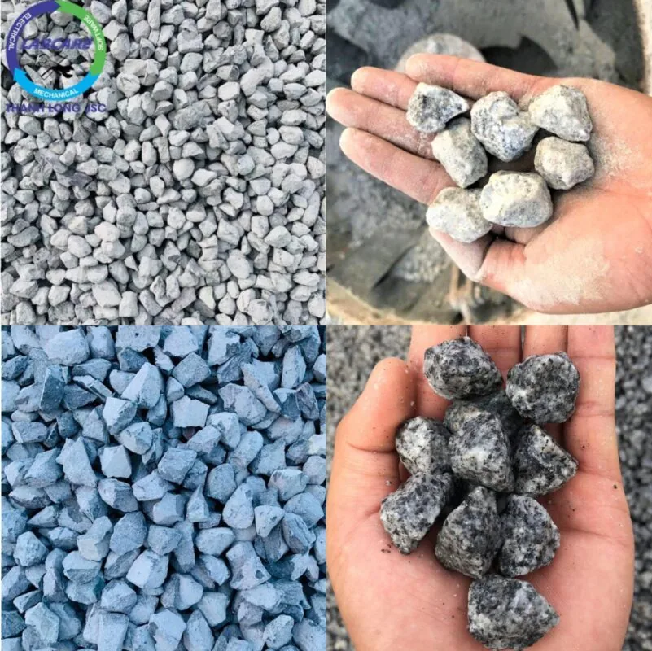
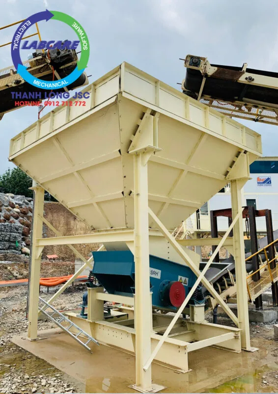

Ngành xây dựng đang phát triển mạnh, nhu cầu sử dụng VLXD ( vật liệu xây dựng) ngày càng cao. Đá đang là một trong những nguyên vật liệu, được sử dụng nhiều nhất trong lĩnh vực xây dựng của nước ta. Đá xây dựng như:. Đá mi sàng, đá mi bụi, đá 0x4, đá 1×2, đá 4×6, đá 3×4, đá 5×7 … với những mục đích sử dụng khác nhau. Để có được nguyên liệu này phải trải qua quy trình sản xuất đá xây dựng chuyên nghiệp.
Tất cả các loại đá xây dựng đều được khai thác khoáng sản từ bề mặt đến lòng đất, sản xuất từ tự nhiên hoặc khai thác từ các mỏ đá thiên nhiên.
Nhờ vào tạo hóa đã ban tặng cho chúng ta sự đa dạng, phong phú với nhiều loại đá. Cũng như mở ra nhiều cơ hội, thu hút vốn đầu tư từ các nước phát triển. Nhằm thúc đẩy ngành công nghiệp Việt Nam, phát triển hơn trong tương lai.
Quy trình sản xuất đá xây dựng
Bước 1: Khoan nổ mìn sản xuất đá xây dựng
- Tiếp quy trình khai thác đá, ta tiến hành loại bỏ các lớp đất bên trên mỏ đá. Tiến hành đặt mìn vào lỗ khoan đã tạo. Cho nổ mìn phá đá bằng đầu dây có nối vào thiết bị điều khiển từ xa. Sản phẩm thu được là những khối đá tách rời có kích thước khá lớn. Trong quá trình nổ các khối đá kích thước lớn, ta phải tiếp tục tiến hành nổ phá để đá đạt kích thước yêu cầu.
- Công đoạn này khá nguy hiểm, phụ thuộc hoàn toàn và các kỹ sư có tay nghề chuyên môn trong ngành. Đòi hỏi phải hết sức cẩn thận trong mọi trường hợp. Vì để đặt mìn vào lỗ khoan người thợ phải leo lên cao, tai nạn có thể xuất hiện bất cứ lúc nào.
- Bước tiếp theo là việc chuẩn bị nguồn lực, để bắt đầu bắt tay vào công việc bao gồm:. Nhân sự, thiết bị máy móc, phương tiện…
- Khi các công tác chuẩn bị đã hoàn thành , chủ mỏ phải cho xây dựng hệ thống cơ sở vật chất tạm thời ( lán trại, trạm điện, xây dựng hệ thống các tuyến đường giao thông, mặt bằng, bãi chứa, kho thuốc nổ,…) nhằm phục vụ trong suốt quy trình sản xuất đá xây dựng.

Bước 2 : Trạm nghiền sàng đá và phân loại
Công đoạn xay nghiền phân loại đá
- Đá thô sau khi được nổ mìn, sẽ ở những kích cỡ to nhỏ khác nhau. Lúc này cần dùng xe xúc bốc đá lên xe hầm (xe tải), để tiến hành vận chuyển đưa vào trạm nghiền sàng với các công suất khác nhau.
- Tiếp đến là giai đoạn phân loại đá, đá được đưa vào trạm nghiền sàng đá. Phân loại thành những viên đá có kích thước theo yêu cầu, tiêu chuẩn từng loại. Đây là bước cần sự tỉ mỉ và độ chính xác cao. Vì thế phải luôn để tâm đến các nhà cung cấp dây chuyền nghiền đá, vật tư lưới sàng phù hợp với tính chất vật lý của từng loại đá cần sản xuất.
- LƯU Ý theo các công nghệ cũ những loại đá có kích thước nhỏ như:. Mi sàng, mi bụi, đá 1×2 cần tiến hành cho sàng đi sàng lại lần 2, để cho ra kết quả chính xác nhất. Nhưng đối với trạm nghiền đá xây dựng của THANH LONG JSC thì chỉ cần sàng 1 lần đã ra đc các loại đá đạt tiêu chuẩn. Giúp các chủ đầu tư tiết kiệm các khoản đầu tư hàng tháng như : thay lưới sàng, điện tiêu thụ, chi phí bảo dưỡng, lương công nhân, rút ngắn thời gian sản xuất đá, ….
Bước 3: Phân phối thành phẩm
Sau khi đã cho ra thành phẩm cuối cùng, các loại đá theo tiêu chuẩn của từng loại trong xây dựng. Người ta cho vận chuyển từng xe tải lớn đến các công trường thi công. Vận chuyển trực tiếp về kho bãi bảo quản, phân phối sang các tỉnh thành khác trên cả nước.
Vậy một trạm nghiền sàng đá và quy trình sản xuất đá xây dựng cần những thiết bị gì ?
Dựa vào thực tế, Thanh Long JSC đã lắp một trạm nghiền đá cho công ty khai thác đá Bình Thuận, với công suất là 450 tấn/giờ. Nguyên liệu cần nghiền là đá Granite, có cường độ cứng ở mức 7 theo thang Mohs. (thang Mohs là xếp hạng các khoáng chất, dựa trên khả năng chống trầy xước hoặc duy trì các vết trầy xước). Đá có cường độ cứng tương đối tốt, vào khoảng 1300-1800 kg/ cm2 và hàm lượng SiO2 vượt quá 55%. Tập trung nhiều ở các khu vực Vùng Nam Trung Bộ, Tây Nguyên, Đông Nam Bộ, …
Các loại thành phẩm đầu ra bao gồm:. Cát nhân tạo 0-5 mm, 5 – 10 mm, 10-19 mm, 19-25mm, 25 – 40 mm, 40-60mm. Khi cần có thể lấy được đá base 0- 37.5 mm.
Một cấu hình khá phổ biến cho một trạm nghiền đá 450 tấn/giờ, với mục đích:. Cấp phối bê tông tươi, bê tông ly tâm, bê tông nhựa nóng, cát nghiền nhân tạo. Cấp phối nguyên vật liệu cho các dự án cao tốc, xây dựng có những yêu cầu khắt khe về tiêu chuẩn.
Máy kẹp hàm SJC – thiết bị đầu tiên quan trọng trong quy trình sản xuất đá xây dựng đạt chuẩn
là máy nghiền hàm kiểu mới theo phiên bản dòng C độc đáo số 1 về máy nghiền hàm.
Cấp liệu rung dòng SZ từ nhà sản xuất SRH
Máy cấp liệu rung SZ được thiết kế sử dụng thiết bị kích rung và có cấu tạo trục lệch tâm, biên độ rung ổn định, lượng cấp liệu vào lớn. Chính vì thế cấp liệu rung thường được dùng trước máy nghiền hàm.
Phễu chứa liệu trung gian
Điều chỉnh được lượng đá vào miệng ăn của máy nghiền côn, mà không cần qua kẹp hàm thứ cấp. Giảm mức đầu tư vốn ban đầu, tiết kiệm chi phí đầu tư hàng tháng như điện, vật tư, bảo trì, hao hụt đá, …

Máy nghiền côn SCH
Máy nghiền côn SCH8000 với hiệu suất cao thuộc dòng SCH từ SRH
Sàng rung phân loại dòng SS từ nhà sản xuất SRH
Sàng rung phân loại là một loại máy dùng để phân tách các loại cỡ hạt khác nhau trong hỗn hợp vật liệu thành từng cỡ hạt riêng biệt. Sàng rung dòng SS có phương thức ghép nối, khiến cho thiết bị có cường độ lớn, chắc chắn hơn và thời gian sử dụng lâu bền. Hơn nữa, việc sử dụng dầu bôi trơn kéo dài tuổi thọ sử dụng của sàng rung phân loại lên rất nhiều. Tiết kiệm lớn chi phí sử dụng cho khách hàng.
Máy nghiền cát / máy vo đá dòng SV \ SRH
Băng tải sản xuất trong nước theo tiêu chuẩn và thiết kế hãng

Nhấc máy lên và liên hệ với chúng tôi Zalo, hotline: 0912 712 772
Thanh Long JSC đại diện SHR tại Việt Nam chuyên cung cấp:
- Dây chuyền nghiền cát/đá cố định: Máy kẹp hàm, máy nghiền côn, sàng rung phân loại, máy nghiền cát nhân tạo VSI , …
- Dây chuyền nghiền cát/đá di động: máy kẹp hàm di động, máy nghiền côn di động, sàng rung phân loại di động, máy nghiền cát nhân tạo VSI di động,..
- Công nghệ rửa/tách:: Máy rửa cát theo module, sàng rung tách nước, máy tuyển rửa cát, máy tách cát mịn, máy thu hồi cát mịn…
- Vật tư, thiết bị phụ tùng: Dao nghiền, lưới sàng, má kẹp hàm, nón côn, …
Liên hệ với Thanh Long JSC:
Kênh video Youtube:
Page Facebook: Công Nghệ Máy Nghiền Đá
Website: https://thegioimaynghienda.com https://labcare.com.vn/
#bn